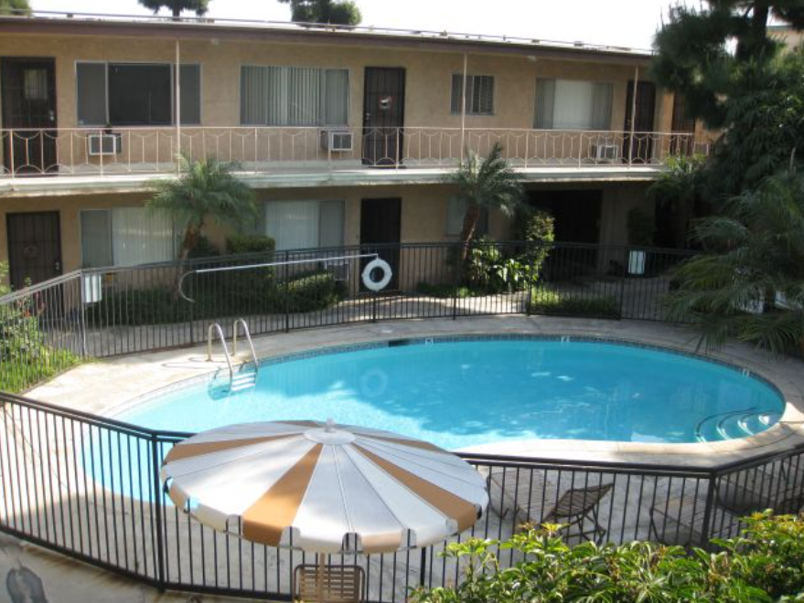
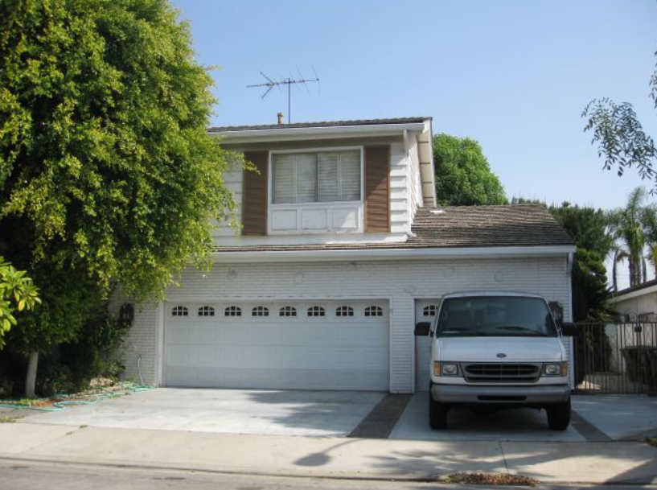

カーペンターズ追悼ツアー

世界中で愛され続けるカーペンターズ。彼らが歩んだ軌跡と、特別な場所を訪れる感動のツアーです。
この旅では、リチャードとカレンが過ごした家、音楽活動の起点となった場所、そしてファンにとって特別な意味を持つ場所を巡ります。
訪問スポット

カーペンターズの最初のアパート
1963年、カリフォルニアに引っ越した当初、カーペンター家が住んだアパート。小さな部屋で家族と過ごした日々が、音楽の原点となりました。
ダウニー図書館
カーペンターズを追悼する特別展示「カーペンターズ・コレクション」が設置されています。ファンにとって見逃せない場所です。

ナウ・アンド・ゼンの家
アルバム『ナウ・アンド・ゼン』のジャケットに登場した家。この家で多くのヒット曲が生まれました。
その他の訪問スポット例
- カレン・カーペンターさんのお墓
- カリフォルニア州立大学ロングビーチ校（リチャード＆カレン・カーペンター・センター）
- サウザンド・オークス市役所前庭
- ハンティントン・ライブラリー（『オンリー・イェスタデー』撮影地）